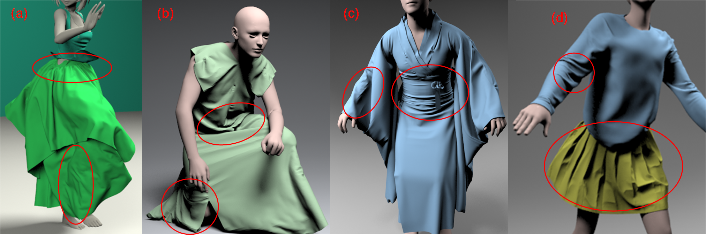

1 - Zhejiang University, China
2 - University of Maryland at College Park, USA
3 - University of Texas Health Science Center at Houston, USA

Benchmarks: Benchmarks: Our novel GPU-based collision handling algorithm is used to simulate complex cloth with irregular shape and multiple layers at 2−8fps on an NVIDIA GeForce GTX 1080. We observe 7−10X speedup over prior algorithms. Fast Simulation on Complex Benchmarks: Our novel multi-GPU based cloth simulation algorithm can simulate complex cloth meshes ((a) Miku with1.33M triangles, (b) Kneel with1.65M triangles, (c) Kimono with 1M triangles and (d) Zoey with 569K triangles) with irregular shapes and multiple layers at 2-8fps on workstations with multiple NVIDIA GPUs. We observe up to 8.23X speedups on 8 GPUs. Ours is the first approach that can performalmost interactive complex cloth simulation with wrinkles, friction and folds on commodity workstations. We highlight the areas with detailed wrinkles.
Abstract
We present a novel parallel algorithm for cloth simulation that exploits multiple
GPUs for fast computation and the handling of very high resolution
meshes. To accelerate implicit integration, we describe new parallel algorithms
for sparse matrix-vector multiplication (SpMV) and for dynamic matrix
assembly on a multi-GPU workstation. Our algorithms use a novel work
queue generation scheme for a fat-tree GPU interconnect topology. Furthermore,
we present a novel collision handling scheme that uses spatial hashing
for discrete and continuous collision detection along with a non-linear
impact zone solver. Our parallel schemes can distribute the computation
and storage overhead among multiple GPUs and enable us to perform almost
interactive simulation on complex cloth meshes, which can hardly be
handled on a single GPU due to memory limitations. We have evaluated
the performance with two multi-GPU workstations (with 4 and 8 GPUs, respectively)
on cloth meshes with 0.5-1.65M triangles. Our approach can
reliably handle the collisions and generate vivid wrinkles and folds at 2-5
fps, which is significantly faster than prior cloth simulation systems. We
observe almost linear speedups with respect to the number of GPUs.
Paper (PDF 3.6 MB)
Supplemetary Material (PDF 864 KB)
Video (67.5 MB)
Source Code (ZIP 8.3 MB)
For password, write to tang_m@zju.edu.cn, with title "P-Cloth 0.1 password", please provide your name, affiliation, and purpose.
Cheng Li, Min Tang, Ruofeng Tong, Ming Cai, Jieyi Zhao, Dinesh Manocha, P-Cloth: Interactive Cloth Simulation on Multi-GPU Systems using Dynamic Matrix Assembly and Pipelined Implicit Integrators, ACM Transactions on Graphics, 39(6), Article 108 (December 2020), 15 pages (Proc. of ACM SIGGRAPH Asia), 2020.
@article{pcloth20,
author = {Li, Cheng and Tang, Min and Tong, Ruofeng and Cai, Ming and Zhao, Jieyi and Manocha, Dinesh},
title = {{P-Cloth}: Interactive Cloth Simulation on Multi-{GPU} Systems using Dynamic Matrix Assembly and Pipelined Implicit Integrators},
journal = {ACM Transaction on Graphics (Proceedings of SIGGRAPH Asia)},
volume = {39},
number = {6},
pages = {180:1--15},
month = {December},
year = {2020},
}
I-Cloth: Incremental Collision Handling for GPU-Based Interactive Cloth Simulation
PSCC: Parallel Self-Collision Culling with Spatial Hashing on GPUs
I-Cloth: API for fast and reliable cloth simulation with CUDA
Efficient BVH-based Collision Detection Scheme with Ordering and Restructuring
MCCD: Multi-Core Collision Detection between Deformable Models using Front-Based Decomposition
TightCCD: Efficient and Robust Continuous Collision Detection using Tight Error Bounds
Fast and Exact Continuous Collision Detection with Bernstein Sign Classification
A GPU-based Streaming Algorithm for High-Resolution Cloth Simulation
UNC dynamic model benchmark repository
Collision-Streams: Fast GPU-based Collision Detection for Deformable Models
Fast Continuous Collision Detection using Deforming Non-Penetration Filters
Fast Collision Detection for Deformable Models using Representative-Triangles
DeformCD: Collision Detection between Deforming Objects
Self-CCD: Continuous Collision Detection for Deforming Objects
Interactive Collision Detection between Deformable Models using Chromatic Decomposition
Fast Proximity Computation Among Deformable Models using Discrete Voronoi Diagrams
CULLIDE: Interactive Collision Detection between Complex Models using Graphics Hardware
RCULLIDE: Fast and Reliable Collision Culling using Graphics Processors
Quick-CULLIDE: Efficient Inter- and Intra-Object Collision Culling using Graphics Hardware
This work is supported in part by the National Key R&D Program of China under Grant No.: 2017YFB1002703, and the National Natural Science Foundation of China under Grant No.: 61972341, Grant No.: 61832016, Grant No.: 51775496, and Grant No.: 61732015. We would like to thank Zhiyu Zhang and Xiaorui Chen for helping on the benchmarks, Momo Inc. for the Benchmark Kimono, Zhijiang Lab for the 8-GPU workstation, and the anonymous referees for their valuable comments and helpful suggestions.